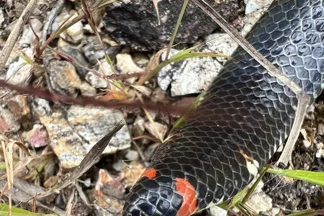
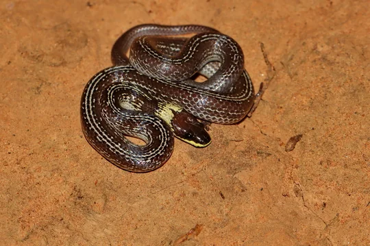
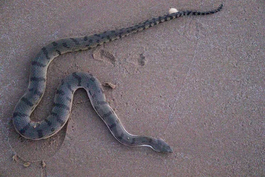
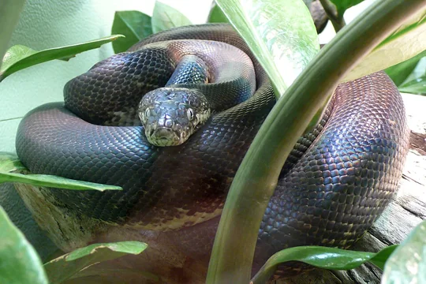
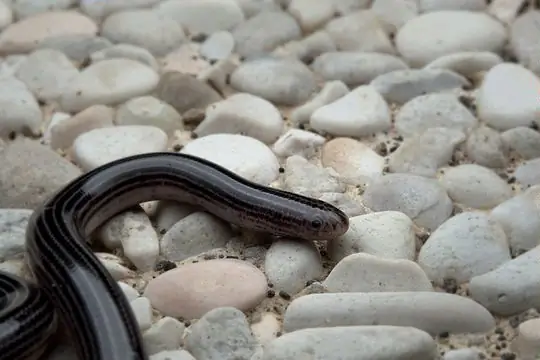
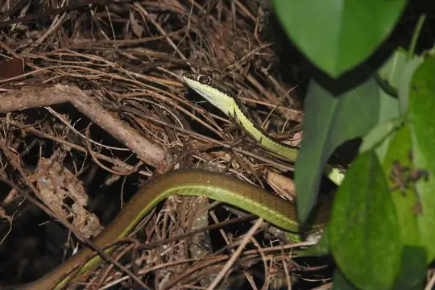
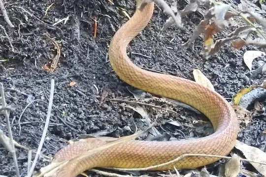
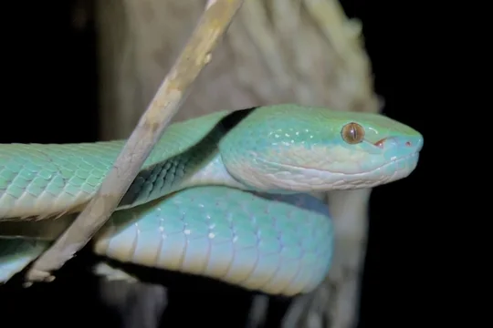

Snakes of Timor-Leste
11 living snake species are recorded in Timor-Leste in SnakeList: 1 venomous and 10 non-venomous, from 6 families.
- 11living species
- 6families
Danger to people · tap a number to show only those snakes
- 0mildly venomous
Harmful = dangerously venomous + giant constrictors. Harmless = not venomous and not a giant constrictor. Mildly venomous snakes have no serious bites to people documented. Any snake can bite.
These totals count the unique living snake species SnakeList records in Timor-Leste. A species counts if it is recorded anywhere in the country, so not every snake lives in every part of it.
In SnakeList’s checklist filters
How many of the 11 living species here each filter in the SnakeList app picks out – tap a number to show only those snakes.
Snake family4 types, 6 families
Type
Family
Habitats13 habitat groups
Habitats are estimated from where each snake is recorded and what kind of snake it is, as in SnakeList; a snake can count in several.
Characteristics1 venomous, 3 constrictors
- 0snake eaters
Constrictor and Non-constrictor count only snakes whose family or genus is documented as constricting or not; the rest are not documented.
Other filters1 popular, 3 rare
- 0extinct
Species
Showing 11 species

Boulenger's Pipe SnakeCylindrophis boulengeri
Common Wolf Snake (capucinus)Lycodon capucinus
Dog-faced Water SnakeCerberus rynchops
Freckled PythonLiasis mackloti
Lesser Sunda BlindsnakeSundatyphlops polygrammicus
Lesser Sundas BronzebackDendrelaphis inornatus Malayan Banded Wolf SnakeLycodon subcinctus
Malayan Banded Wolf SnakeLycodon subcinctus Reticulated PythonMalayopython reticulatus
Reticulated PythonMalayopython reticulatus
Sunda Rat SnakeCoelognathus subradiatus- No photo yetTimor Ground SnakeStegonotus nancuro

White-lipped Island PitviperTrimeresurus insularis
No snakes in Timor-Leste match.
Timor-Leste’s snakes in numbers
- Families: Colubridae 5, Pythonidae 2, Cylindrophiidae 1, Homalopsidae 1, Typhlopidae 1, Viperidae 1.
- 1 is recorded in no other country or territory in SnakeList: Timor Ground Snake.
How precisely they are recorded
Of the 11 living species recorded in Timor-Leste, 5 are recorded by municipality in SnakeList’s data; 6 are recorded only for Timor-Leste as a whole, so the municipality pages list them as possible rather than recorded. SnakeList records each species by municipality, not by exact spot, so a species listed for a municipality may live in only part of it.
Municipalities
The municipalities where SnakeList records snakes, with how many living species are recorded in each. Each page has its species, venomous snakes, families, the species found only there, its cities and neighbours.
Cities
Its biggest cities, biggest first. SnakeList records snakes by municipality, not by city, so each city page shows the species recorded in its municipality and, separately, those only possible there - not species confirmed in the city.
- Dili Dili Municipality
No place matches that.